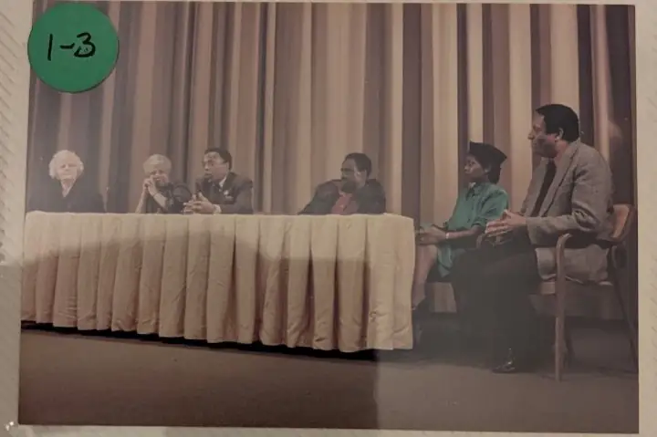

February 21 · Wheeler Auditorium, UC Berkeley
Film symposium
The printed announcement identifies a film symposium at Wheeler Auditorium, Berkeley. A panel photograph in the accompanying binder may depict this event, although its exact occasion is not independently verified.
Photograph-to-event assignment: probable.
